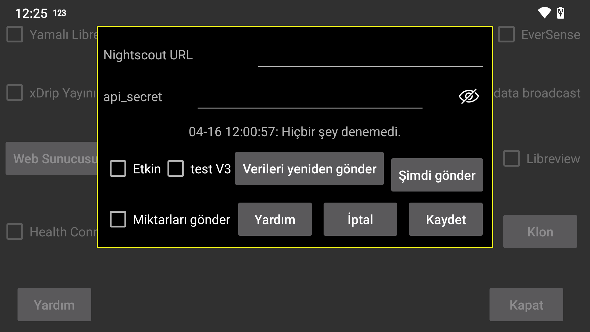

Çogu durumda suraya da bakabilirsiniz web server in Juggluco ya da juggluco-server. Sadece Nightscout sayfasini görüntülemeye yarayan birkaç uygulama var. Bunun için: cgm-remote-moni tor. Juggluco 7.4.1'deki web sunucusuyla AAPS ve AAPSClient'i bile kullanabilirsiniz.
Tüm akis verileri, geldikleri anda Nightscout sunucusuna yüklenir. Birden fazla sensör kullanildiginda, tüm sensörlerin tüm verileri yüklenir. Bazi Garmin saat uygulamalari / yüzleri / widget'lari, verilerin 5 dakika arayla alindigini varsayar. Glikoz verilerini bir dakika arayla aldiklarinda, egrinin yalnizca son beste birini gösterecektir. Bu nedenle, Juggluco'ya dahil edilen web sunucusu, "interval=secs" daha düsük bir degere ayarlanmadigi sürece degerleri 5 dakika arayla gönderir.
URL: URL su sekilde olmalidir https://hostname:port örnegin, https://myname.herokuapp.com:6789
Aktif: Karsiya Yükleyiciyi Aç
Test V3: Juggluco'nun Nightscout'a veri yüklemesi için api/v3 kullanmasina izin verin. Daha önce V1 yüklemeleri almis bir Nightscout sunucusuna yükleme yapmak için bunu kullanmayin ve daha önce V3 yüklemeleri almis bir Nightscout sunucusuna V1 yüklemeleri göndermeyin. api_secret yerine, tedavileri ve girdileri yükleme iznine sahip bir Access Token belirlemeniz gerekir. Nightscout web arayüzünde Yönetici Araçlari altinda Access Token (Erisim Belirteci) olusturabilirsiniz.
Miktarlari Gir: Miktarlari tedavi olarak Nightscout'a gönderin. Onay kutusuna dokunmak sizi her etiketin Nightscout'ta ne anlama geldigini belirtebileceginiz bir iletisim kutusuna yönlendirir. Bu özellikler Juggluco'daki web sunucusuyla paylasilir. ( Sol Menü -> Ayarlar -> Veri Alisverisi -> Web Sunucusu). Tüm etiketler islendiginde, kontrol edebilirsiniz. "Miktarlari Gir". Daha sonra yeni bir etiket eklerseniz, bununla ne yapacaginizi belirtmeyi unutmayin. Nightscout' taki bir hata nedeniyle, daha eski zaman dilimlerindeki eklemeler veya silmeler yalnizca yeni bir zamana sahip ögeler eklendikten sonra gösterilir. Bu, Nightscout'a daha az siklikta veri göndermenin daha iyi oldugu anlamina gelir. Artik kullanici Juggluco'dan ayrilip ekrani her kapattiginda veya baska bir uygulamaya geçtiginde bu yapilir.
Veriyi yeniden gönder: Tüm veriyi Nightscout sunucusuna tekrar yükleyin
Simdi Gönder: Normalde veri sensörden veya klon baglantisindan geldiginde hemen gönderilir. Herhangi bir nedenle önceki girisimin basarisiz olmasi durumunda bu dügmeye basin.
WearOS sürümü Juggluco 4.15.0 ve üzeri sürümlerde glikoz degerlerini Nightscout'a yükleyebilir. Hemen hemen tüm durumlarda bir telefon veya tabletteki Juggluco sürümü veya bir bilgisayar üzerindeki Juggluco sunucusu araciligiyla verileri daha iyi gönderebilirsiniz. Özellikle Nightscout sunucusuyla baglanti kurulamadiginda pil hizli tükenecektir, bu nedenle güvenilir bir baglanti olmadiginda Aktif'i kapatabilirsiniz.
Iki hata mesaji sik sik karisikliga neden olur.
Hata mesaji "yükleme hatasi:" ve ardindan hiçbir sey gelmediginde, olasi nedenler sunlardir:
Ag baglantisi kapali;
Ana bilgisayar adi yanlis yazilmis.
upload failure: java.io.FileNotFoundException: NIGHTSCOUTURL/api/v1/entries
Burada NIGHTSCOUTURL "Nightscout URL"den sonra girilen sunucu URL'sini ifade eder.
Bunun sebebi asagidakilerden biri olabilir:
URL yanlis siteye isaret ediyor. Örnegin, ana bilgisayar adindan sonraki port eksik ve bu nedenle Juggluco normal bir web sunucusuna baglaniyor;
api_secret yanlis;
NIGHTSCOUTURL orada olmamasi gereken bir yol içeriyor. Örnegin; Nightscout URL https://ahost.org:8887 and you entered https://ahost.org:8887/extra.